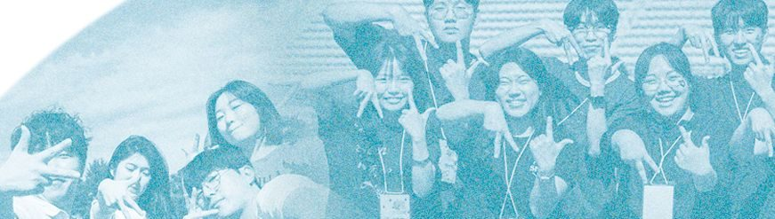
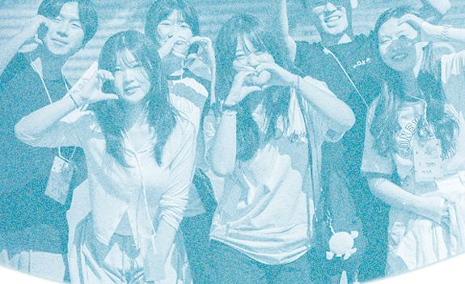

80주년기념행사
하나님 중심성경 중심교회 중심



SFC는
빛바랜 추억이 아닙니다.
지금도 살아 역사하는
하나님의 운동입니다.
‘SFC 80주년 기념대회’를
준비하며
우리의 운동을 ‘전국학생신앙운동’이라는 이름으로 명명한 지 75년, 그 이전의 ‘진리갱생회유지회’와 ‘신앙협조회’ 시절까지 거슬러 올라가면, 부산 제일영도교회 중고생들이 한명동 목사님의 사택에 모여 기도의 모닥불을 피운 지 어느덧 80년이라는 세월이 흘렀습니다.
지난 80년 동안 SFC가 꺼지지 않고 달려올 수 있었던 가장 중요한 핵심 요인은 바로 ‘우리의 강령’입니다. SFC는 강령 구현 운동입니다.
80년이 지난 지금, 우리는 다시금 이 강령 앞에 섭니다. 과연 우리는 신앙고백의 굳건한 터 위에 신앙과 생활을 바르게 세워가고 있는지, 단지 개인의 고백에 머무르지 않고 세상 속에서 빛과 소금의 삶을 치열하게 살아가고 있는지 자문하게 됩니다.
이에 우리는 ‘Ad fontes, missions come true’(본질을 회복하자, 사명을 성취하자)라는 표제로 80주년을 맞이하고자 합니다.
이 글을 읽는 모든 동문과 동역자 여러분, 그리고 다음 세대의 주역들이 함께 이 역사를 기억하며 80주년 기념대회에 기쁨으로 동참해 주시기를 간절히 소망합니다.
SFC는
과거의 빛바랜 추억이 아니라,
지금 이 순간에도 살아 역사하시는
하나님의 운동입니다.
기도의 모닥불에서 80년까지
한명동 목사님의 사택에 모여 기도의 모닥불을 피웠습니다.
이름은 바뀌어도 기도와 고백은 이어졌습니다.
우리의 운동에 지금의 이름이 붙었습니다.
Ad fontes, missions come true — 본질을 회복하고 사명을 성취하는 SFC 공동체.
2027 기념행사
- 5/13U별 축구대회총동문회장배
- 6/29 – 7/3제54회 전국 대학생대회
- 7/2 – 7/3총동문대회Home Coming Day
- 7/27 – 30제55회 전국 중고생대회
- 10마지막 주간SFC주간 기념 학술대회
* 장소와 세부 프로그램은 확정되는 대로 이곳에 안내합니다.
다음 세대에 건넬 다섯 가지
- 1SFC 홈페이지 & 로고 리뉴얼진행 중
- 2SFC 80주년 기념송 만들기 학신가 2
- 3SFC 뮤지컬 제작
- 4시와 찬미 12집 제작
- 5역사책 편찬
다음 80년을 함께 달려 주세요
기념대회와 기념사업은 동문과 동역자 여러분의 기도와 후원으로 준비됩니다.
예금주 · 학생신앙운동
토스로 바로 후원계좌를 복사하고 은행 앱 열기
앱이 열리면 계좌번호 칸에 붙여넣기 하세요.
아이폰에서는 바로 연결되지 않는 앱이 있을 수 있습니다. 이때도 계좌번호는 이미 복사되어 있으니 직접 앱을 열어 붙여넣어 주세요.
이 소식을 함께 나눠 주세요

휴대폰 카메라로 비추면 이 페이지가 열립니다.
주보나 현수막, 발표 화면에 넣어 쓰세요.